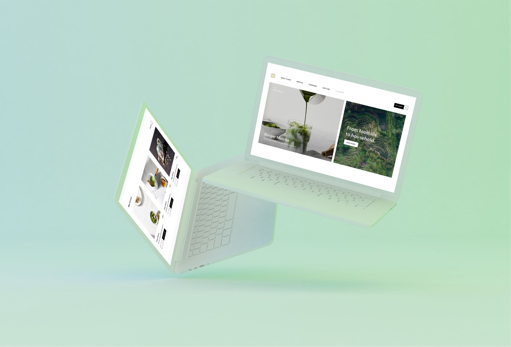
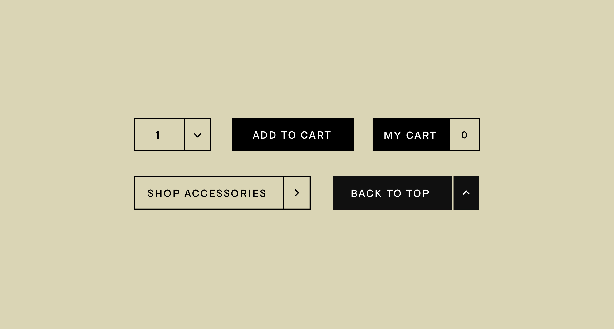

Branding, UX/UI Design
Hatori

An inspired look and feel
When conceptualizing the design system for this project, I decided to seek inspiration from Japanese art and culture (renowned for its minimalism) - in order to create something consistent and meaningful. The final concept was influenced by Japan's infamous Tatami, resulting in a sharp yet spacious design.

to top